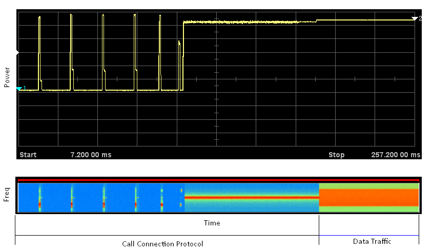
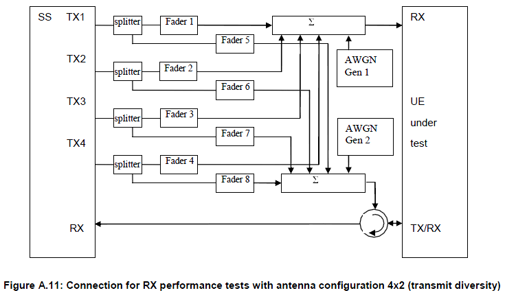

RF Test and Measurement Home : www.sharetechnote.com
In any wireless communication device, we have to go through two large group of testing. One for testing transmission path and the other for testing recieve path.
For a wireless communication device to work properly, it should meet following hardware requirement
i) The device should transmit the signal which is strong enough power to make it sure it reaches the other party of the communication.
ii) The device should not transmit the signal which is so strong that it interfere the communication between other parties.
iii) The device should transmit the signal with good enough quality which can be decoded/corrected by the other party.
iv) The device should transmit the signal in the exact frequency that has been allocated for the communication.
v) The device should not generate any noise out side of the frequency area that has been allocated for the device.
If any of these condition deviate too much from the specification, the device cannot communicate with the other party or let some other device to communicate. In terms of measurement equipment, item i) and ii) belong to "power measurement", item iii) is related to "Modulation Analysis" and item iv) falls into "Frequency Error measurement". Item v) is also a kind of "power measurement", but the measurement area in frequency domain is different from item i) & item ii). Anyway if you have any equipment that can perform the following three measurement for your communication technology, you can do the most critical part of transmission path.
a) Power Measurement
b) Modulation Analysis
c) Frequency Error Measurement
Now let's think about the recieve path measurement. What would be the most important reciever characteristics for the communication device ?
i) The reciever must be able to decode successfuly the signal coming from a transmitter even though the signal strength is very low.
ii) The reciever must be able to decode successfuly the signal coming from a transmitter even when there are a certain level of noise around the signal.
In terms of measurement logic, item i) and ii) are the same. Equipment sends a pattern of the known signal and let the reciever decode it and compare the original signal from the equipment and the decoded signal by reciever and how much different they are. The more different they are, the poorer reciever quality it is. We call this method "BER(Bit Error Rate) measurement". Item i) measures BER when the input signal to the device is very low and Item ii) measures BER when there are noise to the input signal.
Before we go forward to LTE measurement, pick any technology you are already familiar with and make a list of measurement on your test plan and try to map those items with the measurement principles I described above. Once you are familiar with this mapping, you will understand LTE measurement items more easily.
- LTE RF Measurement Items
- Snapshots of LTE Uplink Signals for RF Testing
- Challenges for LTE RF Testing
- LTE Specific Measurement
- IBE (In-Band Emission)
- Power Control - Absolute Power Tolerance
- Power Control - Relative Power Tolerance
- Aggregate Power Control Tolerance
- RF Test Equipment/UE Connection Diagram
- Protocol Sequence for RF Conformance Test
- RF Conformance Test - TRX Conformance (36.521-1)
- RF Conformance Test - RRM Conformance (36.521-3)
- Overview on RF/PHY Performance Test
- Thinking over a cup of coffee
Now let's look a little bit detail into LTE RF measurement. First thing I have done is to make a list of measurement items from 3GPP 36.521-1 and try to map my measurement principles with each of the measurement items.
Here goes the Transmitter measurement items first. You see a lot of "Power Measurement" and some of "Modulation Analysis". Why do we have so many different power measurement and so many different Modulation Analysis. How do they differ from each other ? This is the question you have to find answers on your own. The answer itself is described in 3GPP 36.521-1 but the question is how much I can understand what is described there just by reading it.
The first step would be to read "Test Purpose", "Initial Condition", "Test Procedure" section of each test case as often as possible and try at least to be familiar to each test case.
Here goes the reciever measurement items.
Snapshots of LTE Uplink Signals for RF Testing
As I mentioned earlier, it is not easy to understand all the details of LTE RF Measurement just by reading the specification. I have read the test case purpose, "Initial Condition", "Test Procedure" over and over.. but still everything is vague. As I try to get more into details, the first obstacles that blocks me is a lot of complicated tables describing the test condition. Of course we saw this kind of tables in other technology specification like CDMA, WCDMA but it seems the tables for LTE measurement looks bigger and more complicated. So I decided to see some of the signal patterns described in the specification on spectrum analyzer so that I can get some intuitive idea of the overall RF characteristics of each condition.
For example, following table shows the test condition for each of subtests for MPR (Maximum Power Reduction). If you see the column Uplink Configuration - RB allocation. You will see various cases of resource block allocation for the same Ch BW. Some of the sub tests uses 'Max RB number' (FULL RBs) for the specific channel BW, but some of the subtests are using the number of RBs which is smaller than the Max number of RB (Partial RBs).
< Full RB Signals >

< Partial RB signals >
In case of allocating the number of RBs less than the max RBs (especially when the number of RB is less than 1/2 Max RBs, there can be so many different cases depending on the location of the signal. For example, the signal can be located at the left most side of the channel or at the center or at the right most side of the channel. Theoretically, it can be located in anywhere in the band, but RF conformance specifies only three locations as a test point which is Low range, Mid range, High range. Low range means that the signal start from the left most side of the channel, Mid means the signal is located at the center of the channel, High range means the signal is at the right most side of the channel.
Following sample signals are from a vector signal generator which generate a very good quality signal and the power is also very low, so you see only the signal part without any carrier leakage or in-band image. But in reality, you will see the carrier leakage and in-band image signal in most of the case.
Even though we have new technology every couple of years and LTE is new to many people, RF test and measurement technology have a lot in common with other wireless communication technology. If you had experience with any wireless technology, eg CDMA, GSM, WCDMA, Bluetooth, WLAN, you may find the common logics in LTE.
One of the biggest challenges in LTE measurement for UE development or test engineer would be that there are too many sub tests with too many different parameter settings.Before I get into details, I want to briefly skim through overall RF measurement from C2K.
I don't have much experience with C2K measurement, but with only a little experience I could tell there are much fewer measurement items in this area comparing to WCDMA/HSDPA and even comparing to GSM/GPRS. As far as I remember, following is allmost all that I did for C2K.
i) Total Channel Power
ii) CDP (Code Domain Power)
iii) Rho
iv) Spectrum Emission
v) ACLR
vi) OBW (Occupied Bandwidth)
But the items listed above is more than what I experienced in C2K. For conformance, I think we may have to go through all of these items. But since C2K is very mature technology now, in the RF part developmental stage we wouldn't go through all of these items. In an extreme case that I heard of was "just measure total power, if there is no problem with it. usually no problem with other parts".
Now let's look into WCDMA. For WCDMA R99 (Non HSPA), If I briefly put the list,
i) Max Power
ii) Min Power
iii) On/Off Power
iv) RACH Power
v) EVM
vi) Spectrum Emission
vii) ACLR
viii) OBW (Occupied Bandwidth)
Just in terms of list, it doesn't look like much difference from C2K. But practically the engineer would meet various characteristics which may look quite different from C2K. The first thing we can think of is that the channel bandwith get tripled compared to C2K and this would introduce a lot of complication in RF design. Another issue is RACH process in WCDMA is more complicated than probing process in C2K and add a couple of important test steps.
Now let's look further into HSDPA. You may think HSDPA would not be much different from R99 in terms of Uplink measurement because HSDPA is only for downlink data rate. It is true in terms of high level protocol, but in physical/RF layer an important factor was added to uplink in HSDPA. It is HS-DPCCH. HS-DPCCH is for UE to report CQI and ACK/NACK to BTS. The problem is that even with this additional channels the UE has to maitain the total uplink power as before. So the UE recalculate/rearrange each of the physical channel power. So if you look at the RF conformance test case list, you would not find much difference in terms of test case items but you would find quite a many of sub items were added to the existing test case due to the introduction of HSDPCCH. (If you want to go into further detail, open up 3GPP 34.121 and find the test cases with the keyword "HSDPCCH" in the test title).
Going one step further into HSUPA, you also find no such a big difference in terms of measurement items. But as in HSDPA case, a new physical channel was introduced and it is called E-DPCH. Even with this additional channel, UE also have to maintain the total channel power as in R99. So, as you may guess, UE has to recalculate/rearrange each of physical channel powers. As a result, we would get a couple of additional sub-items added to RF testing.
Finally.. let's think about LTE. What is the biggest difference between LTE and C2K/WCDMA/HSPA in terms of PHY/RF layer ? It would be OFDM. Yes, it is. What kind of additional measurement items would be introduced to RF testing due to the OFDM ? Since OFDM is made up of a lot of sub carrier with very narrow bandwidth, we have to measure most of the characteristics listed above for each OFDM subcarrier. But if we do all of the items for each of the sub carriers, it would take one full day just for one item. Another big difference would be that LTE specification allow many different type of system bandwidth whereas in C2K/WCDMA, the system bandwidth is always same. It means you have to measure the whole set of test items for multiple different system bandwidth which multiplies the measurement time and parameter settings in measurement equipment.Based on the LTE specification, an LTE system bandwidth can be any of 1.4 Mhz, 3 Mhz, 5 Mhz, 10 Mhz, 15 Mhz, 20 Mhz whereas C2K can only have single bandwidth of 1.28 and WCDMA can only have single bandwidth of 3.84. Of course, a specific system operator would use only one of the bandwidth in their network but Mobile device manufacturer should design the UE which support all of these bandwidth.On top of this, there is another factors to make LTE test even more complex especially for mobile phone design/test. It is the fact that a real bandwidth being used at a specific time can change dinamically.
One intuitive example is shown in the following measurement screen. This the RF signal captured for LTE call connection and data transfer. When you initiate a call, the mobile device would go through the protocol sequence for call setup and then data fraffic would start. If you see at the bottom of the screen (spectrogram) of the measurement screen, you would notice that frequency allocation (bandwidth being used) during this period changes. In this screen, the frequence allocation for data traffic does not change, but in live network this bandwidth would change dynamically.

What is the implication of these multiple system bandwith and dynamic bandwidth change to Mobile phone designer and the test engineer ? For designers, the biggest issues would be how to optimize various kinds of design parameters to be best fit for all of these bands. For test engineers, the biggest issue would be huge number of the test cases they have to go through.
Final outcome of all these considerations on multiple bandwidth and dynamic bandwidth change can be examplified as a table shown below. This is a table for only one test case. See all those different system bandwith you have to cover. Different RB allocations is for dynamic frequency allocation that I mentioned above. In LTE, for every test case you would have this kind of tables and this will be huge headache to designers and test engineers.
Even though LTE RF measurement has a lot of common characteristics which is similar to other technology, there are several measurement which is unique to LTE. Can you guess which would be the LTE specific tests ? If you recall unique properties of LTE signal that I described above, you would make a pretty good guess.
One of the most unique feature of LTE would be that in most case UE does not use full system bandwidth, meaning it uses only a portion of RF bandwidth. Just in terms of RF characteristics, this partial usage of RF band would not cause any serious problem, but what if the portion is allocated to only one side around the center frequency ? You would see the spectrum as follows.(I would not explain this picture in detail. Just take a close look and try to vervalize what you see in this picture and you would know the meaning and why we need to measure this item). The design goal for UE transmitter is to minimize the emission at the center frequency and the other emission (Image signal).
< Power Control - Absolute Power Tolerance >
When UE transmit the first PUSCH, the power is determined by p0-NominalPUSCH and PUSCH Power Control Algorithm. This test is to check if UE set the accurate initial PUSCH power according to p0-NominalPUSCH and PUSCH Power Control Algorithm (This is different from what we call Open Loop Power Control in 3G. When we say "open loop power control", it usually mean the initial PRACH power. On the contrary, Absolute Power Tolerance is about the initial PUSCH power ).
< Power Control - Relative Power Tolerance >
Another aspect I want to mention is about power control. Overall power control test method is very similar to WCDMA ILPC(Inner Loop Power Control) test. Network (SS) sends a consecutive sequence of TPC command (Transmission Power Control command), like Up, Up, Up, Up... Down, Down, Down, Down,... and check if UE properly decode the command and set UE TX power indicated by each Up/Down command(+1 dB, -1 dB). LTE is using a similar method.. but if you see the following measurement you will see a huge jump in the middle which you didn't see with WCDMA. Does this mean that LTE has special TPC command like +10 dB jump or -10 dB fall ?
No. The big jump you see in the measurement is not as a result of big TPC command, but as a result of increase of number of RB. Even though UE transmit the same power at each subcarrier, the total power get larger if UE is using more subcarrier.
< Aggregate Power Control Tolerance >
This test is to check how stably a UL power can maintained without any additional adjustment. This test is imporant because there are many situations during which UE cannot receive any power control command for adjustment like during measurement Gap or Connected Mode DRX.
Since this power stability should be applied both for PUCCH and PUSCH, this test is made up of two sub test, one for PUCCH and another one for PUSCH as illustrated below.
Following illustration is for PUCCH Aggregate Power Control Tolerance.
Following illustration is for PUSCH Aggregate Power Control Tolerance.
RF Test Equipment/UE Connection Diagram


Protocol Sequence for RF Conformance Test
The overall protocol sequence for RF conformance test is defined in 36.508. But most of the equipment vendor put a little variation. I put one example sequence below.
1) MIB
2) SIB 1, 2, 3
3) RRC : PRACH Preamble
4) RRC : RACH Response
5) RRC : RRC Connection Request
6) RRC : RRC Connection Setup
7) RRC : RRC Connection Setup Complete + NAS : Attach Request
8) RRC : DL Information Transfer + NAS : Authentication Request
9) RRC : UL Information Transfer + NAS : Authentication Response
10) RRC : DL Information Transfer + NAS : Security Mode Command
11) RRC : UL Information Transfer + NAS : Security Mode Complete
12) RRC: DLInformationTransfer + TC: ACTIVATE TEST MODE
13) RRC: ULInformationTransfer + TC: ACTIVATE TEST MODE COMPLETE
14) RRC : Security Mode Command
15) RRC : Security Mode Complete
16) RRC: UECapabilityEnquiry
17) RRC: UECapabilityInformation
15) RRC : RRC Connection Reconfiguration + NAS : Attach Accept + NAS : Activate Default EPS Bearer Context Req
16) RRC : RRC Connection Reconfiguration Complete + NAS : Attach Complete
17) RRC : RRC Connection Release
< MO or MT call > : In MT call, Paging should be sent.
18) RRC : PRACH Preamble
19) RRC : RACH Response
20) RRC : RRC Connection Request
21) RRC : RRC Connection Setup
22) RRC : RRC Connection Setup Complete
23) RRC : Security Mode Command
24) RRC : Security Mode Complete
25) RRC : RRC Connection Reconfiguration
26) RRC : RRC Connection Reconfiguration Complete
< Perform Test Case >
27) RRC : RRC Connection Release
One important step and major different part from the ordinary call processing protocol sequence is "TC: ACTIVATE TEST MODE". This part is described in detail in the following specifications.
36.509 - 6.5 ACTIVATE TEST MODE
36.509 - 5.3.2.3 Reception of ACTIVATE TEST MODE message by UE
Unlike the test mode in UMTS, LTE test mode in RF conformance testing does not establish the loopback mode. The main purpose of the test mode in LTE described in the 36.509 - 5.3.2.3 as follows.
When the UE test mode is active, the UE shall accept any request to establish a data radio bearer with an associated EPS bearer context, both included in the same RRC message, and within the radio access capabilities of the UE.
RF Conformance Test - TRX Conformance (36.521-1)
It seems that many people think RF conformance is only for testing the performance/functionality of RF front end part of the mobile phone. It may be true, but eventual purpose of these test is to make sure that UE is functioning without any problem in live network. So each of these test items are related to one or more procedure happening in live network.
Therefore, it is very important to have big picture of live network procedures happenning between UE and the network and to find correlation between these conformance test items and the step/steps of live network process.
Often people ask me "Why we need to test these test items ? What is the purpose of these test ?". If you see the 3GPP specification (36.521) to find answers to these queston.. the answer is described as follows under 'test purpose' section.
Following example is for 6.3 Output Power Dynamics.
To verify the UEs ability to transmit with a broadband output power below the value specified in the test requirement when the power is set to a minimum value
Does this make any sense to you ? Not much to me at least. This description is good for test/pass-fail criterial, but does not give me any practical meaning for the test purpose.
My recommendation is to describe the overall live network procedure at very high level as follows and try to map each of the conformance test cases to the steps of your high level description.
i) UE is Off
ii) Power On UE
iii) < Frequency Search >
iv) < Cell Search > : Normally a UE would find multiple cells in this process
v) < Cell Selection >
vi) MIB decoding
vii) SIB deconding
viii) < Initial RACH Process >
ix) < Registration/Authentication/Attach>
x) <Default EPS Bearer Setup >
xi) Now UE is in IDLE Mode
xi) <(If the current cell become weak or UE moves to another cell regisn) Cell Reselection>
xii) <(When Paging message comes or User make a call) RACH Process>
xiii) < Setup Dedicated EPS Bearer >
xiv) Receive data
xv) Transmit data
xvi) (If UE power is percieved too weak by the network) Network send TPC command to increase UE Tx Power
xvii) (If UE power is percieved too strong by the network) Network send TPC command to decrease UE Tx Power
xviii) < (If UE moves to another cell region) Network and UE perform Handover procedure >
xix) User stop call and UE gets into IDLE mode
If you just blindly looking into conformance test specification, you may be overwhelmed by the number of test cases. Would it be possible for me to understand all of these ? Do I have to give up digging into the details and just press button on the test system and take blindly whatver the machine spits out ?
But once you get the big pictures of these test cases, you will notice that all of those test cases can be grouped into only handfull of framework.
My recommendation for you is to try to understand the concept (big picture) of each chapter first rather than directly jumping into each of the test cases.
Let's take look at each chapters of TRX conformance 36.521-1. These four chapters are related to the whole procedure described above except iii), v), xviii).
Chapter 6, 7 is straightforward and they are most widely tested from the development stage even at manufacturing line. You may get a little bit confused by the title of the chapter 8. When we say "Performance", many people would think of "IP throughput". But in this case it is not true. "Performance" in this case means "How well a UE can successfully decode downlink signal even under various noisy channel condition". Chapter 9 is to measure "How accurately UE measure various channel condition and report to the network ?". In short, it is measuring CQI (Channel Quality Indicator), RI (Rank Index) , PMI (Precoding Matrix Index).
|
Chapter |
Test Category |
|
6 |
Transmitter Characteristics |
|
7 |
Receiver Characteristics |
|
8 |
Performance Requirement |
|
9 |
Reporting of Channel State Information |
Now let's look into each test cases in each chapter. Chapter 6 (Transmitter Characteristic) has following test cases. As you see, it is just measuring UE transmission power in various condition and data modulation quality. Most of the test items that is uniq to LTE are in this group, for example,
|
Chapter 6 |
Transmitter Characteristics - Measurement Items |
|
6.2.2 |
Transmit power / UE Maximum Output Power |
|
6.2.3 |
Transmit power / Maximum Power Reduction (MPR) |
|
6.2.4 |
Transmit power / Additional Maximum Power Reduction (A-MPR) |
|
6.2.5 |
Transmit power / Configured UE transmitted Output Power |
|
6.3.2 |
Output Power Dynamics / Minimum Output Power |
|
6.3.4.1 |
Output Power Dynamics / ON/OFF time mask / General ON/OFF time mask |
|
6.3.4.2.1 |
Output Power Dynamics / PRACH and SRS time mask / PRACH time mask |
|
6.3.4.2.2 |
Output Power Dynamics / PRACH and SRS time mask / SRS time mask |
|
6.3.5.1 |
Output Power Dynamics / Power Control / Power Control Absolute power tolerance |
|
6.3.5.2 |
Output Power Dynamics / Power Control / Power Control Relative power tolerance |
|
6.3.5.3 |
Output Power Dynamics / Power Control / Aggregate power control tolerance |
|
6.5.1 |
Transmit signal quality / Frequency Error |
|
6.5.2.1 |
Transmit signal quality / Transmit modulation / Error Vector Magnitude (EVM) |
|
6.5.2.1A |
Transmit signal quality / Transmit modulation / PUSCH-EVM with exclusion period |
|
6.5.2.2 |
Transmit signal quality / Transmit modulation / Carrier leakage |
|
6.5.2.3 |
Transmit signal quality / Transmit modulation / In-band emissions for non allocated RB |
|
6.5.2.4 |
Transmit signal quality / Transmit modulation / EVM equalizer spectrum flatness |
|
6.6.1 |
Output RF spectrum emissions / Occupied bandwidth |
|
6.6.2.1 |
Output RF spectrum emissions / Out of band emission / Spectrum Emission Mask |
|
6.6.2.3 |
Output RF spectrum emissions / Out of band emission / Adjacent Channel Leakage power Ratio |
|
6.6.3.1 |
Output RF spectrum emissions / Spurious emissions / Transmitter Spurious emissions |
|
6.6.3.2 |
Output RF spectrum emissions / Spurious emissions / Spurious emission band UE co-existence |
|
6.6.3.3 |
Output RF spectrum emissions / Spurious emissions / Additional spurious emissions |
|
6.7 |
Transmit intermodulation |
Chapter 7 is almost identical to WCDMA reciever measurement. Basically all of these test cases measures how much data is properly decoded and how much data get lost under various UE reciever power (network transmission power).
|
Chapter 7 |
Receiver Characteristics - Measurement Items |
|
7.3 |
Reference sensitivity level |
|
7.4 |
Maximum input level |
|
7.5 |
Adjacent Channel Selectivity (ACS) |
|
7.6.1 |
Blocking characteristics / In-band blocking |
|
7.6.2 |
Blocking characteristics / Out of-band blocking |
|
7.6.3 |
Blocking characteristics / Narrow band blocking |
|
7.7 |
Spurious response |
|
7.8.1 |
Intermodulation characteristics / Wide band Intermodulation |
|
7.9 |
Spurious emissions |
Chapter 8 test mostly about how well UE can demodulate the important downlink signal (e.g, PDSCH, PCFICH/PDCCH, PHICH) under various noisy/fading channel condition. As you may guess, these test cases is using test system configuration like A9, A10, A11 as shown in previous section (TS 36.508 Annex A).
|
Performance Requirement - Measurement Items |
|
|
8.2.1.1.1 |
Demodulation of PDSCH (Cell-Specific Reference Symbols) / FDD (Fixed Reference Channel) / FDD PDSCH Single Antenna Port Performance (Cell-Specific Reference Symbols) / FDD PDSCH Single Antenna Port Performance |
|
8.2.1.1.2 |
Demodulation of PDSCH (Cell-Specific Reference Symbols) / FDD (Fixed Reference Channel) / FDD PDSCH Single Antenna Port Performance (Cell-Specific Reference Symbols) / FDD PDSCH Single Antenna Port Performance with 1PRB |
|
8.2.1.2.1 |
Demodulation of PDSCH (Cell-Specific Reference Symbols) / FDD (Fixed Reference Channel) / FDD PDSCH Transmit Diversity Performance (Cell-Specific Reference Symbols) / FDD PDSCH Transmit Diversity 2x2 |
|
8.2.1.3.1 |
Demodulation of PDSCH (Cell-Specific Reference Symbols) / FDD (Fixed Reference Channel) / FDD PDSCH Open Loop Spatial Multiplexing Performance (Cell-Specific Reference Symbols) / FDD PDSCH Open Loop Spatial Multiplexing 2x2 |
|
8.2.1.3.2 |
Demodulation of PDSCH (Cell-Specific Reference Symbols) / FDD (Fixed Reference Channel) / FDD PDSCH Open Loop Spatial Multiplexing Performance (Cell-Specific Reference Symbols) / FDD PDSCH Open Loop Spatial Multiplexing 4x2 |
|
8.2.1.4.1 |
Demodulation of PDSCH (Cell-Specific Reference Symbols) / FDD (Fixed Reference Channel) / FDD PDSCH Closed Loop Spatial Multiplexing Performance (Cell-Specific Reference Symbols) / FDD PDSCH Closed Loop Single/Multi Layer Spatial Multiplexing 2 x 2 |
|
8.2.1.4.2 |
Demodulation of PDSCH (Cell-Specific Reference Symbols) / FDD (Fixed Reference Channel) / FDD PDSCH Closed Loop Spatial Multiplexing Performance (Cell-Specific Reference Symbols) / FDD PDSCH Closed Loop Single/Multi Layer Spatial Multiplexing 4 x 2 |
|
8.4.1.1 |
Demodulation of PCFICH/PDCCH / FDD / FDD PCFICH/PDCCH Single-antenna Port Performance |
|
8.4.1.2.2 |
Demodulation of PCFICH/PDCCH / FDD / FDD PCFICH/PDCCH Transmit Diversity Performance / FDD PCFICH/PDCCH Transmit Diversity 4x2 |
|
8.5.1.1 |
Demodulation of PHICH / FDD / FDD PHICH Single-antenna Port Performance |
|
8.5.1.2.2 |
Demodulation of PHICH / FDD / FDD PHICH Transmit Diversity Performance / FDD PHICH Transmit Diversity 4x2 |
Chapter 9 is for measuring various feedback from UE regarding the radio channel quality (CQI, RI, PMI). For this measurement, we have to emulate various channel condition, so we need to use test configuration like A9, A10 etc as shown in previous section (TS 36.508 Annex A)
|
Chapter 9 |
Reporting of Channel State Information - Measurement Items |
|
9.2.1.1 |
CQI Performance under AWGN conditions / CQI Reporting under AWGN conditions - PUCCH 1-0 / FDD CQI Reporting under AWGN conditions PUCCH 1-0 |
|
9.2.2.1 |
CQI Performance under AWGN conditions / CQI Reporting under AWGN conditions - PUCCH 1-1 / FDD CQI Reporting under AWGN conditions PUCCH 1-1 |
|
9.3.1.1.1 |
CQI Reporting under fading conditions / Frequency-selective scheduling mode / Frequency-selective scheduling mode - PUSCH 3-0 / FDD Frequency-selective scheduling mode PUSCH 3-0 |
|
9.3.2.1.1 |
CQI Reporting under fading conditions / Frequency non-selective scheduling mode / Frequency non-selective scheduling mode PUCCH 1-0 / FDD Frequency non-selective scheduling mode PUCCH 1-0 |
|
9.3.3.1.1 |
CQI Reporting under fading conditions / Frequency-selective interference / Frequency-selective scheduling mode - PUSCH 3-0 / FDD Frequency-selective scheduling mode PUSCH 3-0 |
|
9.4.1.1.1 |
Reporting of Precoding Matrix Indicator (PMI) / Single PMI / Single PMI PUSCH 3-1 / FDD Single PMI PUSCH 3-1 |
|
9.4.2.1.1 |
Reporting of Precoding Matrix Indicator (PMI) / Multiple PMI / Multiple PMI PUSCH 1-2 / FDD Multiple PMI PUSCH 1-2 |
|
9.5.1.1 |
Reporting of Rank Indicator (RI) / RI Reporting PUCCH 1-1 / FDD RI Reporting PUCCH 1-1 |
RF Conformance Test - RRM Conformance (36.521-3)
|
Chapter |
Test Category |
|
4 |
E-UTRAN RRC_IDLE State Mobility |
|
5 |
E-UTRAN RRC_CONNECTED State Mobility |
|
6 |
RRC Connection Mobility Control |
|
7 |
Timing and Signalling Characteristics |
|
8 |
UE Measurements Procedures |
|
9 |
Measurement Performance Requirements |
|
Chapter 4 |
E-UTRAN RRC_IDLE State Mobility - Measurement Items |
|
4.2.1 |
E-UTRAN Cell Re-Selection / E-UTRAN FDD FDD cell re-selection intra frequency case |
|
4.2.3 |
E-UTRAN Cell Re-Selection / E-UTRAN FDD FDD cell re-selection inter frequency case |
|
4.3.1.1 |
E-UTRAN to UTRAN Cell Re-Selection / E-UTRAN FDD UTRAN FDD cell re-selection / E-UTRA FDD-UTRAN FDD cell reselection: UTRA FDD is of higher priority |
|
4.3.1.2 |
E-UTRAN to UTRAN Cell Re-Selection / E-UTRAN FDD UTRAN FDD cell re-selection / E-UTRA FDDUTRAN FDD cell re-selection: UTRA FDD is of lower priority |
|
4.3.1.3 |
E-UTRAN to UTRAN Cell Re-Selection / E-UTRAN FDD UTRAN FDD cell re-selection / E-UTRAN FDD UTRAN FDD cell re-selection in fading propagation conditions: UTRA FDD is of lower priority |
|
4.4.1 |
E-UTRAN to GSM Cell Re-Selection / E-UTRAN FDD GSM cell re-selection |
|
Chapter 5 |
E-UTRAN RRC_CONNECTED State Mobility - Measurement Items |
|
5.1.1 |
E-UTRAN Handover / E-UTRAN FDD-FDD Handover intra frequency case |
|
5.1.3 |
E-UTRAN Handover / E-UTRAN FDD-FDD Handover inter frequency case |
|
5.1.5 |
E-UTRAN Handover / E-UTRAN FDD-FDD inter frequency Handover: unknown target cell |
|
5.2.1 |
Handover from E-UTRAN to other RATs / E-UTRAN FDD UTRAN FDD handover |
|
5.2.3 |
E-UTRAN to UTRAN Cell Re-Selection / E-UTRAN FDD UTRAN FDD cell re-selection / E-UTRAN FDD UTRAN FDD cell re-selection in fading propagation conditions: UTRA FDD is of lower priority |
|
5.2.7 |
Handover from E-UTRAN to other RATs / E-UTRAN FDD UTRAN FDD handover: unknown target cell |
|
5.2.8 |
Handover from E-UTRAN to other RATs / E-UTRAN FDD GSM handover: unknown target cell |
|
Chapter 6 |
RRC Connection Mobility Control - Measurement Items |
|
6.1.1 |
RRC Re-establishment / E-UTRAN FDD Intra-frequency RRC Re-establishment |
|
6.1.2 |
RRC Re-establishment / E-UTRAN FDD Inter-frequency RRC Re-establishment |
|
6.2.1 |
Random Access / E-UTRAN FDD Contention Based Random Access Test |
|
6.2.2 |
Random Access / E-UTRAN FDD Non-Contention Based Random Access Test |
|
Chapter 7 |
Timing and Signalling Characteristics - Measurement Items |
|
7.1.1 |
UE Transmit Timing / E-UTRAN FDD UE Transmit Timing Accuracy |
|
7.2.1 |
UE Timing Advance / E-UTRAN FDD UE Timing Advance Adjustment Accuracy |
|
7.3.1 |
UE Transmit Timing / E-UTRAN FDD Radio Link Monitoring Test for Out-of-sync |
|
7.3.2 |
UE Transmit Timing / E-UTRAN FDD Radio Link Monitoring Test for In-sync |
|
7.3.5 |
UE Transmit Timing / E-UTRAN FDD Radio Link Monitoring Test for Out-of-sync in DRX |
|
7.3.6 |
UE Transmit Timing / E-UTRAN FDD Radio Link Monitoring Test for In-sync in DRX |
|
Chapter 8 |
UE Measurements Procedures- Measurement Items |
|
8.1.1 |
E-UTRAN intra frequency measurements / E-UTRAN FDD intra frequency measurements / E-UTRAN FDD-FDD intra frequency event triggered reporting under fading propagation conditions in asynchronous cells |
|
8.1.2 |
E-UTRAN intra frequency measurements / E-UTRAN FDD intra frequency measurements / E-UTRAN FDD-FDD intra frequency event triggered reporting under fading propagation conditions in synchronous cells |
|
8.1.3 |
E-UTRAN intra frequency measurements / E-UTRAN FDD intra frequency measurements / E-UTRAN FDD-FDD intra frequency event triggered reporting under fading propagation conditions in synchronous cells with DRX |
|
8.3.1 |
E-UTRAN FDD-FDD Inter-frequency Measurements / E-UTRAN FDD-FDD Inter-frequency event triggered reporting under fading propagation conditions in asynchronous cells |
|
8.3.2 |
E-UTRAN FDD-FDD Inter-frequency Measurements / E-UTRAN FDD-FDD Inter-frequency event triggered reporting when DRX is used under fading propagation conditions in asynchronous cells |
|
8.3.3 |
E-UTRAN FDD-FDD Inter-frequency Measurements / E-UTRAN FDD-FDD Inter frequency event triggered reporting under AWGN propagation conditions in asynchronous cells with DRX when L3 filtering is used |
|
8.5.1 |
E-UTRAN FDD UTRAN measurements / E-UTRAN FDD UTRAN FDD event triggered reporting under fading propagation conditions |
|
8.5.2 |
E-UTRAN FDD UTRAN measurements / E-UTRAN FDD - UTRAN FDD SON ANR cell search reporting under AWGN propagation conditions |
|
8.5.3 |
E-UTRAN FDD UTRAN measurements / E-UTRAN FDD UTRAN FDD event triggered reporting when DRX is used under fading propagation conditions |
|
8.8.1 |
E-UTRAN FDD GSM measurements / E-UTRAN FDD GSM event triggered reporting in AWGN |
|
8.8.2 |
E-UTRAN FDD GSM measurements / E-UTRAN FDD GSM event triggered reporting when DRX is used in AWGN |
|
8.11.1 |
Monitoring of Multiple Layers / Multiple E-UTRAN FDD-FDD Inter-frequency event triggered reporting under fading propagation conditions |
|
8.11.3 |
Monitoring of Multiple Layers / E-UTRAN FDD-FDD Inter-frequency and UTRAN FDD event triggered reporting under fading propagation conditions |
|
8.11.5 |
Monitoring of Multiple Layers / Combined E-UTRAN FDD - E-UTRA FDD and GSM cell search. E-UTRA cells in fading; GSM cell in static propagation conditions |
|
Chapter 9 |
Measurement Performance Requirements - Measurement Items |
|
9.1.1.1 |
RSRP / FDD Intra frequency RSRP Accuracy / FDD Intra Frequency Absolute RSRP Accuracy |
|
9.1.1.2 |
RSRP / FDD Intra frequency RSRP Accuracy / FDD Intra Frequency Relative Accuracy of RSRP |
|
9.1.3.1 |
RSRP / FDD Inter frequency RSRP Accuracy / FDD - FDD Inter Frequency Absolute RSRP Accuracy |
|
9.1.3.2 |
RSRP / FDD Inter frequency RSRP Accuracy / FDD - FDD Inter Frequency Relative Accuracy of RSRP |
|
9.2.1.1 |
RSRQ / FDD Intra frequency RSRQ Accuracy / FDD Intra Frequency Absolute RSRQ Accuracy |
|
9.2.3.1 |
RSRQ / FDD FDD Inter frequency RSRQ Accuracy / FDD FDD Inter Frequency Absolute RSRQ Accuracy |
|
9.2.3.2 |
RSRQ / FDD FDD Inter frequency RSRQ Accuracy / FDD FDD Inter Frequency Relative Accuracy of RSRQ |
Overview on RF/PHY Performance Test
Basic Idea of Performance Test for RF/PHY is pretty simple. As you see in the following diagram, a DUT (UE) is connected to SS (Signaling Simulator) with single cell and Fader and AWGN are connected to the downlink path of the connection.
The purpose is to test how well UE can decode various downlink physical channels under harsh channel condition (e.g, in the exisitance of AWGN and/or Fading).
You can find the details of the performance test from 36.521-1 8 Performance Requirement. There are pretty many test cases under this chapter as in the table in previous section but we can simplify the whole set of test in a simple table as follows.
| Test Channel (Channels UE has to decode) | PDSCH, PCFICH/PDCCH,PBCH, PHICH |
| Test Parameter (Test Condition) | Rho A, Rho B, Noc, Modulation Scheme |
| Fading Condition | |
| SNR | -1.0 ~ 19.1 |
Note : If you are interested in more exhaustive test, refer to Physical Layer Throughput/Performance Test (My personal test)